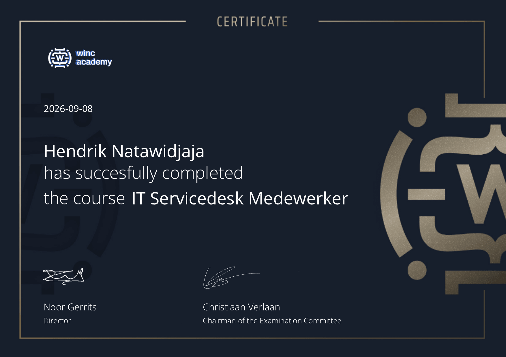

BEHAALD
IT Servicedesk
IT Servicedesk
Medewerker
Winc Academy · 8 september 2026
Praktijkgerichte omscholing in eerstelijns IT-support, ITSM/ITIL, Windows, Microsoft 365, netwerken en ServiceNow.
IT SupportServicedeskTroubleshootingServiceNow
Bekijk PDF
